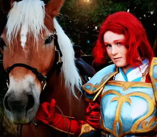

What is Cosplay?
Cosplay in simple terms is dressing up like anything! Cosplay is were you can dress up like a character from a movie, a video game, anime or even a character you created! Cosplay is where you can use your creativity and imagination and become the person you always wanted to be!
Why Cosplay is For Everyone
Cosplay is truly for everyone becasue it is fun! Who doesn't want to have fun? No one, and that is why cosplay if for everyone. Cosplay is so fun in the aspect that you can learn so many new skills such as sewing, foam and leather work, and even things such as 3d printing. Cosplay is a fun way that one can develop their talents and grow as a person. Though you don't only have to make a cosplay for yourself, you can also dress up pets which just adds to the fun!